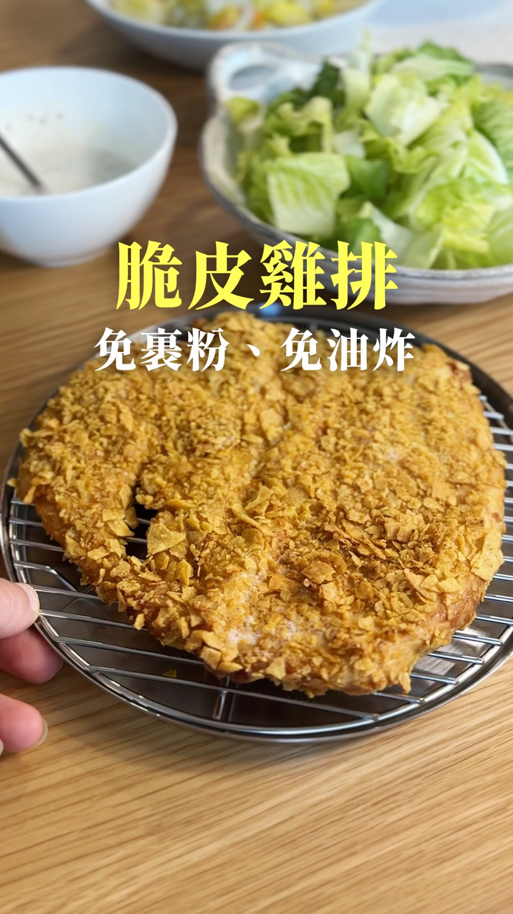

10分鐘
1人份
馬鈴薯餅＋高蛋白奇亞籽布丁
馬鈴薯削成薄片煎成圈包蛋，附一道 15 分鐘就能做的高蛋白奇亞籽布丁。
材 料
原份量
×2
原始
公制
馬鈴薯餅
馬鈴薯
半顆
雞蛋
1顆
起司
適量
火腿
適量
鹽
少許
食用油
少許
高蛋白奇亞籽布丁
無糖希臘優格
150g
牛奶
80ml
奇亞籽
15g（約1大匙多一點）
新鮮藍莓
一把
複製購物清單
作 法
馬鈴薯餅
1
熱油鍋，馬鈴薯削皮後，直接在鍋內削成薄片，圍成圈型。
2
等馬鈴薯的邊邊有點微焦時，翻面，把另外一面也煎得有點焦，撒點鹽。
3
打入一顆雞蛋，攪散。
4
放入火腿、起司（也可以加生菜、番茄）。
5
蓋上鍋蓋，用小火悶一下。
6
開蓋後把薯餅對折，淋上自己喜歡的醬汁，開動！
高蛋白奇亞籽布丁
1
奇亞籽加入牛奶，攪拌一下，至少浸泡15分鐘。
2
加入希臘優格跟藍莓就可以吃了。
開始烹飪模式
小 技 巧
馬鈴薯餅
馬鈴薯一定要切薄片，不然會外面焦但裡面沒熟。
可以用一根叉子或筷子插在馬鈴薯上，會更好削。
也可以先把馬鈴薯都削好，再放在鍋子上煎，這樣不會太緊張。
複製作法與小技巧
分享這道食譜
其他食譜

30分鐘・氣炸鍋
免裹粉玉米脆片雞排
不裹麵粉、不下油鍋，用玉米脆片就能做出酥脆雞排。
20分鐘・湯鍋
卵巾著煮
油豆皮包蛋，用高湯煮到入味，記得連醬汁一起吃。
35分鐘・氣炸鍋・烤箱
蜂蜜烤雞翅
醃過的雞翅氣炸上色，蜂蜜檸檬的醬汁是入味關鍵。
看材料
下一步
材 料